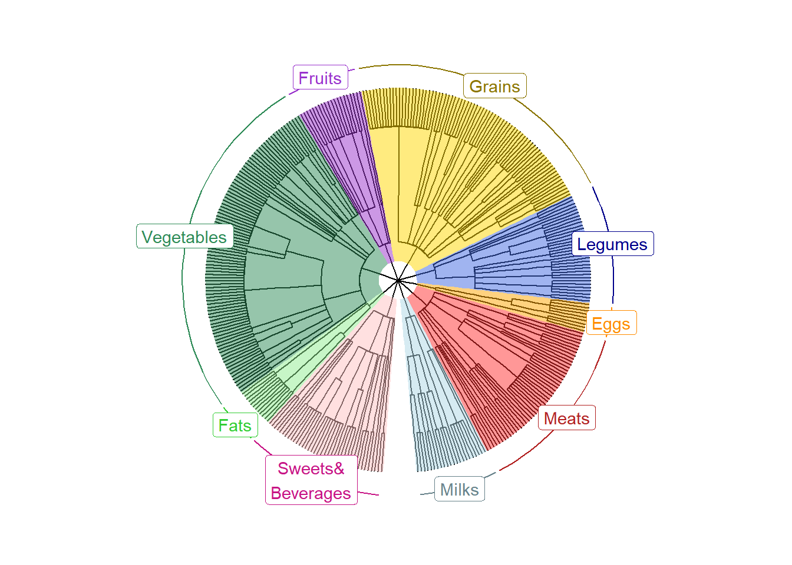

You can plot foodtrees you generated by using the “ggtree” package.
Name your main directory for future use.
main_wd <- "~/GitHub/DietDiveR"If you have not downloaded and installed the ggtree package yet, you can do so by first installing BiocManager (if you have not done so):
if (!require("BiocManager", quietly = TRUE))install.packages("BiocManager")Then, use BiocManager to install the “ggtree” package.
BiocManager::install("ggtree")Load the packages and functions.
library(ggtree)source("lib/specify_data_dir.R")
source("lib/viz_food_tree.r")You can come back to the main directory by:
setwd(main_wd)Go to the “Foodtree” directory where the tree files are saved.
SpecifyDataDirectory(directory.name = "eg_data/VVKAJ/Foodtree")Load the generated foodtree. This will load the .nwk file and save it as a tree object called “tree”.
It is OK to see a message saying:
Found more than one class “phylo” in cache; using the first, from namespace ‘phyloseq’
Also defined by ‘tidytree’
tree <- read.tree("VVKAJ_Items_f_id_s_m_QCed_4Lv.tree.nwk")Prepare node labels of L1 for plotting. It assumes that the tree file has nine L1 levels.
PrepFoodTreePlots(input.tree=tree)Create a color-coded and annotated foodtree with nine L1 levels.
It is OK to see some warning messages about Coordinate system and scale for ‘y’ already being present.
VizFoodTree(input.tree=tree, layout="circular")## Coordinate system already present. Adding new coordinate system, which will
## replace the existing one.
## Scale for y is already present.
## Adding another scale for y, which will replace the existing scale.
## Scale for y is already present.
## Adding another scale for y, which will replace the existing scale.
## Coordinate system already present. Adding new coordinate system, which will
## replace the existing one.Look at the color-coded and annotated foodtree, saved as annotated_tree.
annotated_tree
Save the tree as a PDF file.
ggsave("VVKAJ_Items_f_id_s_m_QCed_4Lv.tree.pdf",
annotated_tree, device="pdf", width=6, height=6, units="in", dpi=300)You can also visualize trees of different levels; Lv2, Lv3, etc., which corresponds to the classification depth of each food item in the dataset. For example, Lv3 contains L1, L2, and L3 categories of food; whereas Lv4 contains L1, L2, L3, and L4 categories. Thus, as the level goes deeper, the more internal nodes there will be in the foodtree.
Come back to the main directory before you start running another script.
setwd(main_wd)